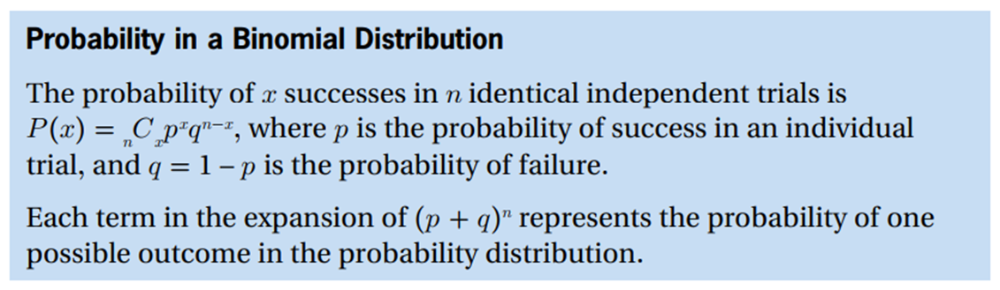
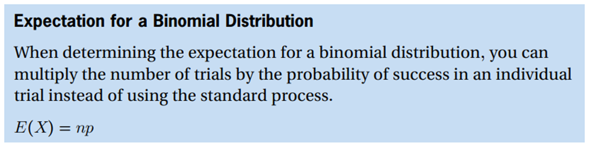

Binomial Distributions
Minds On
Concepts
Binomial probability distribution
• a distribution with independent trials whose outcomes are either success or failure
• the random variable is the number of successes in a given number of trials


Example
Two dice are rolled five times. What is the probability that doubles occur twice?